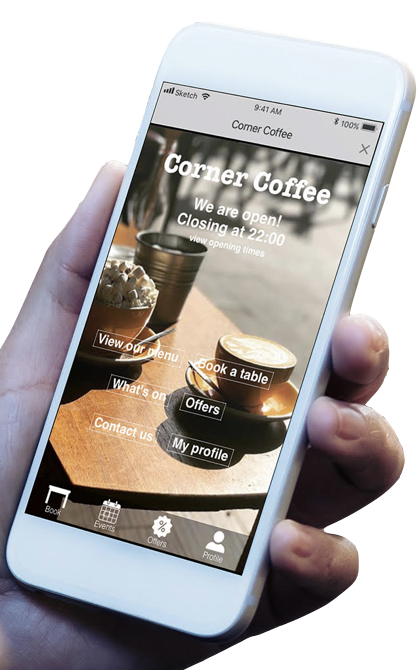

CLIENT: Corner Coffee
SOFTWARE: Sketch, InVision
Corner Coffee is an independent coffee bar that takes pride in serving the best coffee and fresh food, sourced locally.
As the lead UX designer, I partnered with Corner Coffee to uncover their goals and design a user-centered application to meet the needs of their customers. My work on this project includes user research, information architecture, wireframes, and prototyping.
See my design documentation here.